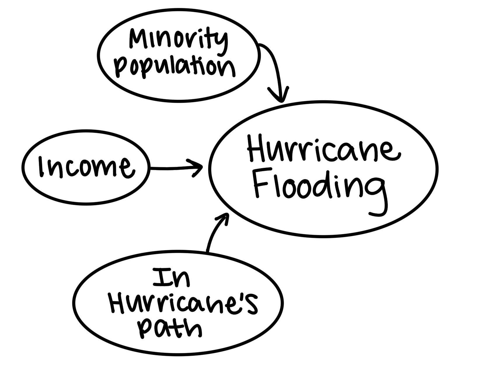
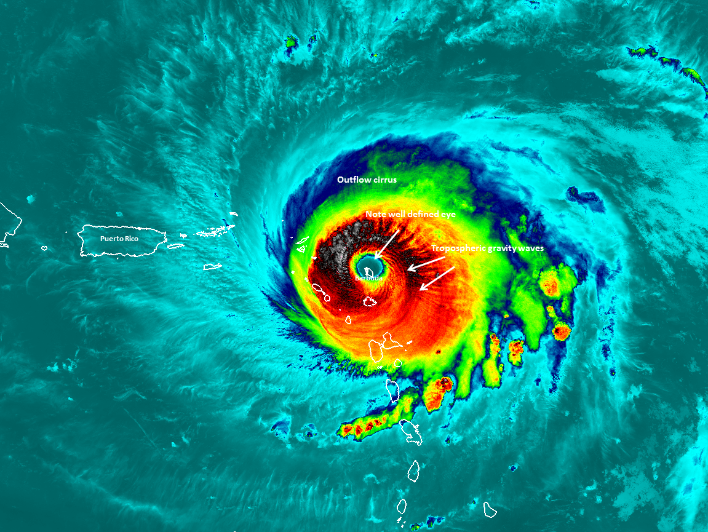
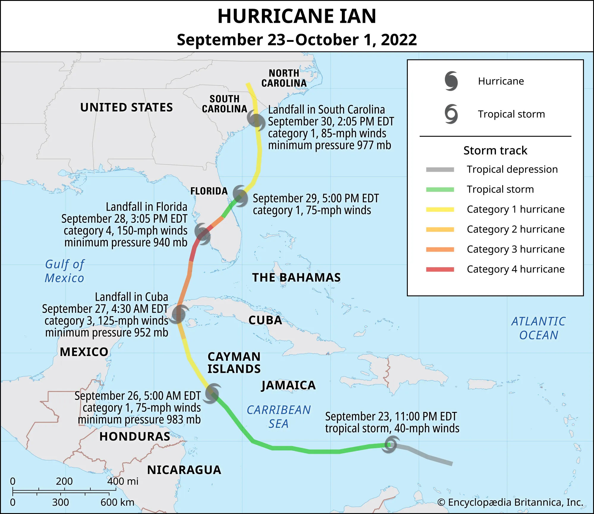
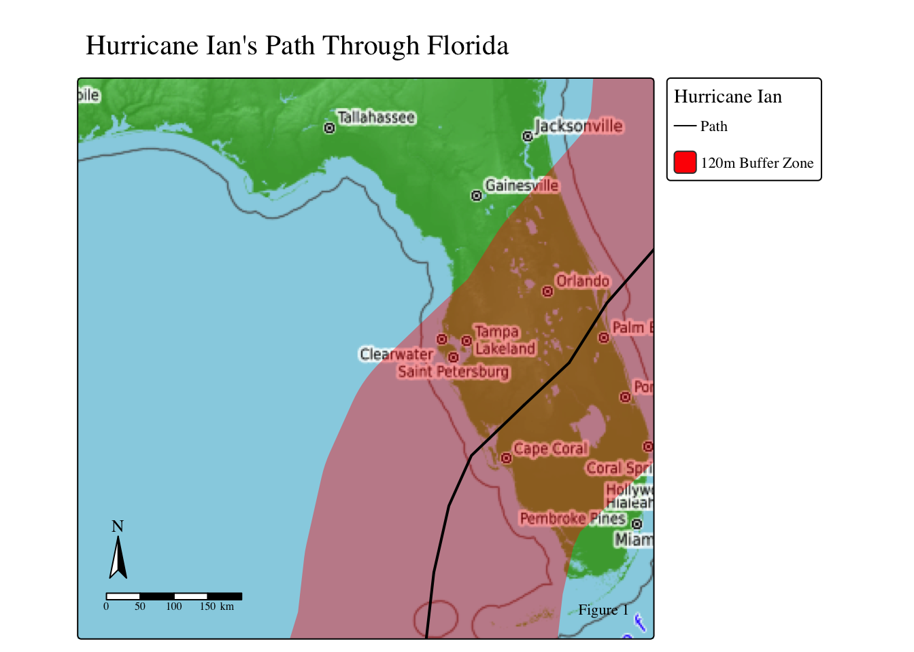
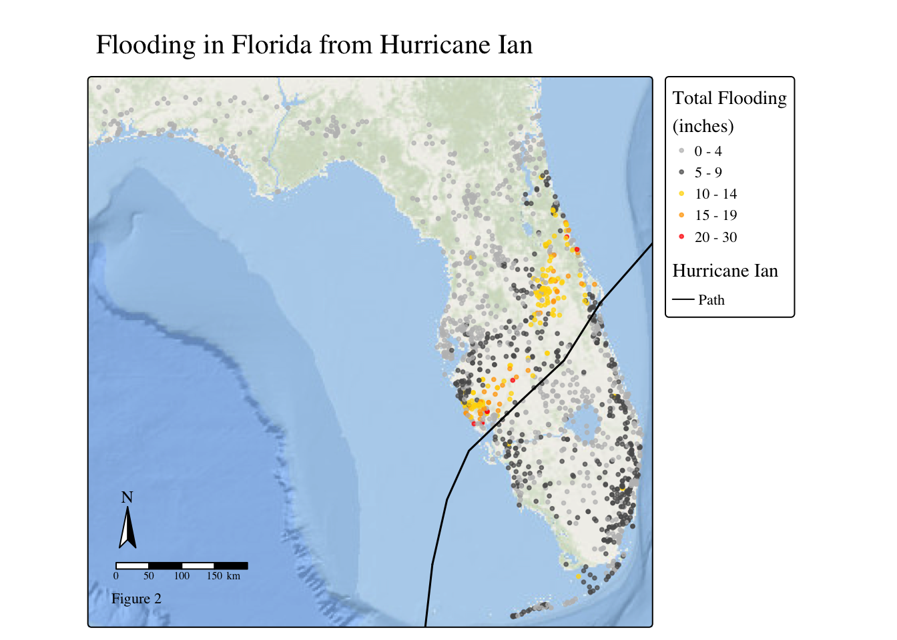
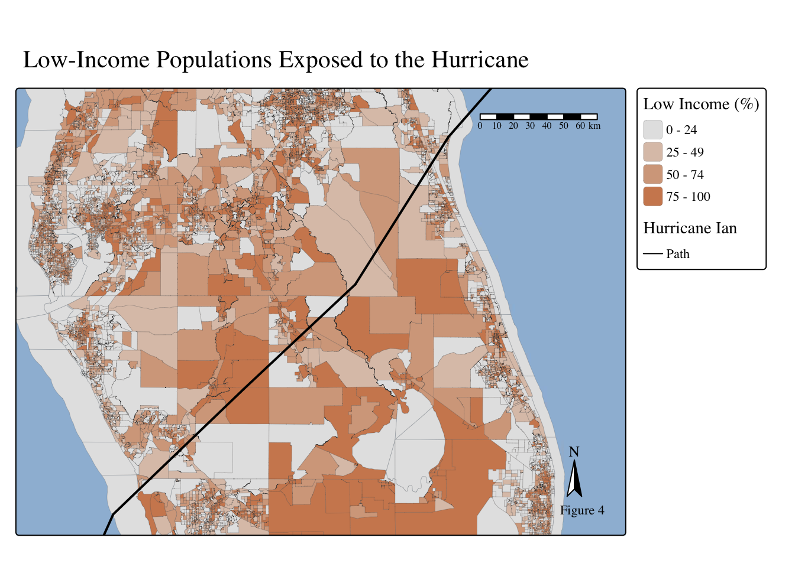
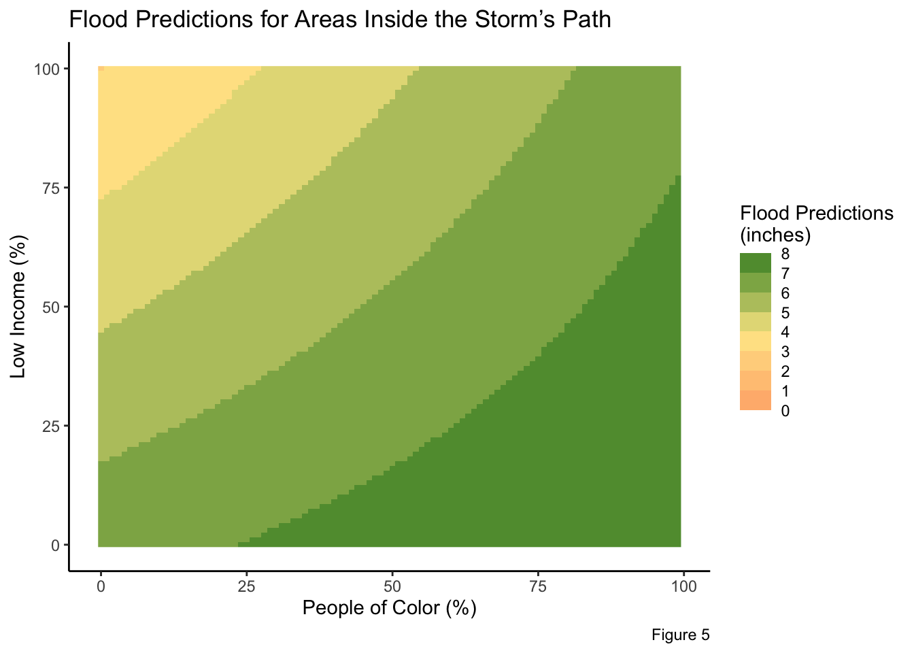
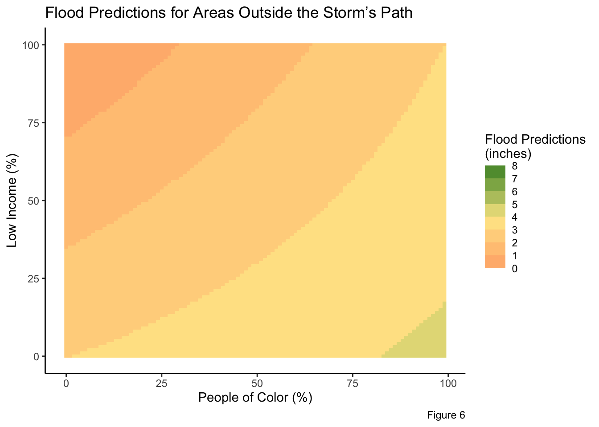
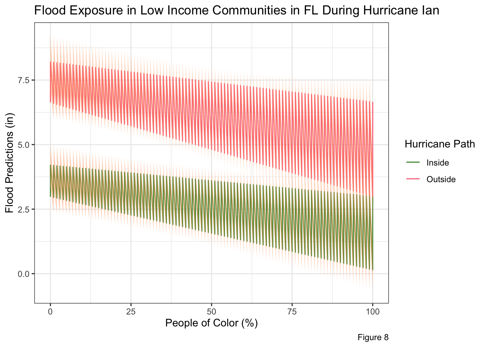
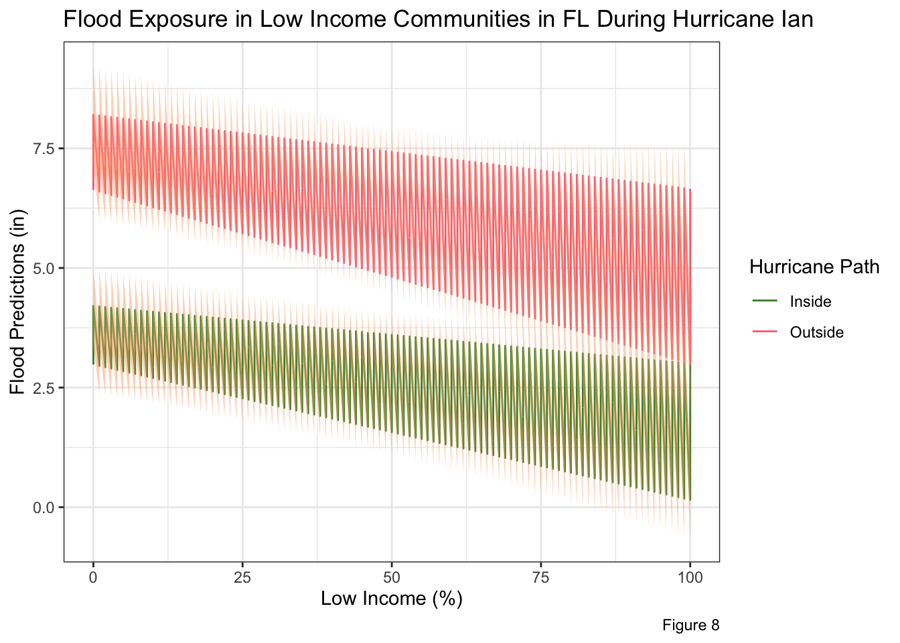

Hurricane Ian Flooding in Florida
MEDS
R
stats
Investigating sociodemiographic influences on flooding intensity during Hurricane Ian.
Introduction
In Fall of 2022, Hurricane Ian formed south of the Cayman Islands. Reaching Cuba, the storm grew into a Category 2 and 3 (Rafferty, 2022). In less then a week, Hurricane Ian traveled to Florida (FL), hitting its west coast (near Sarasota) as a Category 4 (Rafferty, 2022). It ended its treacherous path in the Carolinas. Ian was a deadly hurricane, bringing 250 km/hr winds, disastrous rainfall, and inundations of 6-14 feet of storm surge (Walls, 2022; Rafferty, 2022; Bucci et al., 2023). About 160 people died, mostly due to drowning in the insane storm surge (Rafferty, 2022 & Bucci et al., 2023). In Florida, there is an estimated $109.5 billion of damges, and $112.9 billion of total damages in the US (Bucci et al., 2023). Furthermore, about 3.28 million people in FL lost power (Bucci et al., 2023). Hurricane Ian left disaster in its wake from Cuba all the way to the Carolinas.
Dr. Chakraborty studied the injustice of Hurricane Harvey flooding in Houston, Texas. They found race, ethnicity, and socioeconomic status played a role in the spatial distribution of flooding (Chakraborty, Collins, & Grineski, 2019). Black, Hispanic, and socioeconomically disadvantaged residents faced substantially more flooding compared to their counterparts (Chakraborty, Collins, & Grineski, 2019). While rainfall happens everywhere equally, flooding intensity and duration is not equally distributed as community infrastructure, drainage, and food-control investments vary between neighborhoods (Chakraborty, Collins, & Grineski, 2019).
Inspired by Dr. Chakraborty study, this project aims to investigate the socio-demographics impacts of flooding for Hurricane Ian in Florida. To accomplish this, we will merge flooding data (inches) and census track measurements for easy comparisons. Then, we will run a generalized linear mixed model (glmm). Glmm is a zero-inflated model which means it can manage the 0 values within the dataset. I choose this model because being in the hurricane’s path inherently means flooding. The glmm model will initially look at “does being in the hurricane’s path cause flooding” (a yes or no question) by running a logistic regression. Subsequently, the model will look at “how much impact does the predictors have on flooding” by running a linear regression.
Statical Notation
Statistical Notation for a generalized linear mixed modeling is
$$ \[\begin{align} \text{BinaryFloodingOutcome} &\sim Binomial(1, p) \\ logit(p) &= \beta_0 + \beta_1 \text{(Hurricane Path)} \\ \\ \text{Flooding} &\sim Normal(\mu, \sigma) \\ \mu &= \beta_0 + \beta_1 (\text{LowIncomePct}) + \beta_2 (\text{PofColorPct}) + \beta_3 (\text{LowIncomePct} \times \text{PofColorPct}) + \beta_4 (\text{HurricanePath}) \end{align}\] $$
Hypothesis
Areas with higher concentrations of low-income and minority populations are more susceptible to severe flooding when located within the path of a hurricane.
Alternative Hypothesis: There is no relationship between low-income, minority populations, flood intensity between communities within versus outside of the Hurricane’s path. \[ \begin{align} \beta_1 = 0 \\ \beta_2 = 0 \\ \beta_3 = 0) \\ \beta_4 = 0 \end{align} \]
Directed Acyclic Gragh (DAG)
While precipitation is based on natural occurrences and happen everywhere with no bias, flooding intensity can be reliant on other human built mechanisms. Places that lack green spaces and open soil, fill their neighborhoods with impervious surfaces, increase there likelihood to flood because the water cannot soak into the ground. Roe, Aspinall, & Ward Thompson find that poorer, minority communities lack open green spaces (2016), which might disproportionately cause lower income, minority communities to flood more. Flood migration infrastructure (such as levees, storm drains, retention ponds, and seawalls) are important tools that influence flood severity. Poor communities tend to have limited financial resources and lack political leverage to advocate for flood mitigation projects in their communities which could result in more intense flooding. Finally, minority communities can face structural inequities and redlining that cause infrastructure improvement to go ‘unnoticed,’ increasing their likelihood to flood. Thus, a population’s percentage of low income and people of color could impact the flooding intensity.
The final predictor in this model indicates whether a location lies within the hurricane’s path. Closer to the center of the hurricane, conditions intensify, causing stronger rainfall and wind-force. Hence, areas that intersect along the hurricane’s path will (most likely) experience more flooding.

Datasets
Hurricane Ian flooding data from …
Hurricane Ian path data is vector line geometry acquired from ArcGIS online.
Florida’s census track contains various attributes of each census track and is from the U.S. Census Bureau’s American Community Survey Data.
Geometries of Florida’s counties accessed from U.S. Census Bureau’s Data Catalog.
Initial Steps
First, download all necessary libraries!
Code
library(tidyverse)
library(ggplot2)
library(stars)
library(dplyr)
library(tmap)
library(janitor)
library(glmmTMB)
library(patchwork)Second, download and load in all datasets. Use read_sf to load in geospatial vector data (such as gdp and shp files), and use read_csv for csv files. After loading in the data, piping in filters and selections for specific attributes and columns as well as cleaning up column names with clean_names() will make your code more efficient.
Code
# Flooding data
flooding_FL <- read_csv(here::here('Posts', 'hur_ian_flooding', 'data', 'hurrican_ian_flooding.csv')) %>%
filter(`State/Province`== "FL") %>%
select(City, `State/Province`, `Latitude (°)`, `Longitude (°)`, `Totals (inches)`) %>%
clean_names()
# FL's sociodemographic data
fl_sociodem <- read_sf(here::here('Posts', 'hur_ian_flooding', 'data', 'ejscreen', 'EJSCREEN_2023.gdb')) %>%
filter(ST_ABBREV == 'FL') %>%
clean_names()
# Hurricane Ian Path
hurr_ian <- read_sf(here::here('Posts', 'hur_ian_flooding', 'data', 'Hurricane_Ian_Track', 'Hurricane_Ian_Track.shp'))
# FL counties
fl_counties <- read_sf(here::here('Posts', 'hur_ian_flooding', 'data', 'tl_2023_us_county', 'tl_2023_us_county.shp')) %>%
clean_names() %>%
filter(statefp == 12)Hurricane Ian’s Path
Starting in the Atlantic, Hurricane Ian moved North to Cuba, across Florida, and into the Carolinas (Rafferty, 2022).

Hurricane Ian’s wind-force had a 240-mile diameter when it hit Florida. Therefore, I used a 120 mile radius buffer to identity what is considered “in the Hurricane’s path”.
Code
# Create 120 mile buffer
hurr_union <- st_union(hurr_ian) # Unionize hurricane lines
ian_buffer <- st_buffer(hurr_union, dist = units::set_units(120, "miles")) # Buffer
rm(hurr_union)Map the Hurricane’s path with the buffer
Code
# Hurricane Ian Buffer
tm_shape(ian_buffer) +
tm_polygons(col = NA,
lwd = 0,
fill = "red",
fill_alpha = 0.4) +
tm_shape(hurr_ian) +
tm_lines(lwd = 2) +
tm_shape(fl_sociodem, is.main = TRUE) +
tm_title(text = "Hurricane Ian's Path Through Florida") +
tm_basemap("OpenTopoMap") +
tm_layout(text.fontfamily = "serif", text.fontface = "plain") +
tm_add_legend(type = 'lines',
labels = "Path",
title = 'Hurricane Ian') +
tm_add_legend(type = "polygons",
labels = "120m Buffer Zone",
fill = "red",
alpha = 0.4) +
tm_compass(position = c('left', 'bottom')) +
tm_scalebar(position = c('left', 'bottom')) +
tm_credits("Figure 1")
Data Wrangling
Datatypes
While the flooding data has a longitude and latitude columns, it is not read as a geometry. Therefore, we need to use st_as_sf to change the datatype to simple feature (sf).
flooding_FL_sf <- st_as_sf(flooding_FL, coords = c("longitude", "latitude"), crs = 'EPSG:4326')Coordinate Reference Systems
It is always important to know the geospatial datas’ coordinate reference systems (CRS). The CRS defines how the geospatial data is located and plotted. There are 2 CRS types: geographic (how the data is plotted on the 3D globe) and projected (how the data is plotted on a 2D map). It is important to use the correct CRS for your data and intended goal. Additionally, when merging or plotting geospatial data together, the datasets must be in the same CRS. Matching CRSs ensures that all spatial data layers align correctly, calculations are meaningful, and analytical results are trustworthy.
Therefore, we need to check and change CRS using st_transforms to ensure all CRS match.
# Change the flooding df CRS
flooding_FL_sf <- st_transform(flooding_FL_sf, st_crs(fl_sociodem))
# Check if CRS match
st_crs(flooding_FL_sf) == st_crs(ian_buffer) [1] TRUEst_crs(flooding_FL_sf) == st_crs(fl_sociodem)[1] TRUEst_crs(ian_buffer) == st_crs(fl_sociodem)[1] TRUEAdd Column: Flooding in Hurricane’s Path?
GOAL: Create a new column where “1” indicated the flooding is within the Hurricane’s path, and “0” indicates if flooding is outside of the Hurricane’s path.
To find if the flood data is within the Hurricane’s path (the buffer), we used st_intersects which returns ‘0’ (if x and y do not intersect) and ‘1’ (if x and y intersects).
Code
# Intersections of flooding points and hurricane path
intersect <- st_intersects(flooding_FL_sf, ian_buffer) #sparse = FALSE) # See which rows did and didn't intersect
len <- data.frame(lengths(intersect) > 0) # Returns TRUE (where 1) and FALSE (where 0)
# Combine dataframes
flooding_FL_sf <- cbind(flooding_FL_sf, len) %>%
rename('hur_path' = `lengths.intersect....0` )
# Change to 1 and 0s
flooding_FL_sf$hur_path <- as.numeric(flooding_FL_sf$hur_path)
# Remove unnecessary objects
rm(list = c('intersect', 'len'))Join Flood Data and Socioeconomic Data
Using st_join to merge the flooding and socio-demographic data.
join_df <- st_join(flooding_FL_sf, fl_sociodem, join = st_within)Maps of Florida
Hurricane Ian Flooding
Code
tm_shape(flooding_FL_sf) +
tm_dots(fill = 'totals_inches',
fill_alpha = 0.7,
fill.scale = tm_scale(breaks = c(0, 5, 10, 15, 20, 30),
values = c('grey', "grey35", 'gold', 'orange', 'red')),
fill.legend = tm_legend(title = "Total Flooding\n(inches)"),
#border.col = 'black',
size = 0.2) +
tm_title(text = "Flooding in Florida from Hurricane Ian") +
tm_shape(hurr_ian) +
tm_lines(lwd = 1.5) +
tm_basemap("Esri.OceanBasemap") +
tm_compass(position = c('left', 'bottom')) +
tm_scalebar(position = c('left', 'bottom')) +
tm_add_legend(labels = "Path",
type= "lines",
title = "Hurricane Ian"
) +
tm_layout(text.fontfamily = "serif", text.fontface = "plain") +
tm_credits("Figure 2",
position = c('left', 'bottom'))
Florida’s Sociodemographics
Code
my_palette1 <- c('#DEEBDFFF', '#A9CCACFF', '#399043FF', '#00740EFF')
#00740EFF #399043FF #72AC79FF #ABC8AEFF
my_palette2 <- c('#E4E4E4','#DDC5B6', '#D5A78B', '#CF895E') #CF895EFF')
#E4E4E4FF #DDC5B7FF #D6A78BFF #CF895EFF
tm_shape(
fl_sociodem,
bbox = sf::st_bbox(c(
xmin = -82.86, xmax = -79.71,
ymin = 26.54, ymax = 28.59
)),
crs = st_crs(fl_sociodem) ) +
tm_polygons(fill = 'p_peopcolorpct',
fill.scale = tm_scale(breaks = c(0, 25, 50, 75, 100),
values = my_palette1),
fill.legend = tm_legend(title = "Low Income (%)"),
lwd = 0.1) +
tm_title(text = "Minority Populations Exposed to the Hurricane") +
tm_shape(hurr_ian) +
tm_lines(lwd = 2) +
tm_shape(ian_buffer) +
# tm_polygons(col = NA,
# lwd = 0,
# fill = "red",
# fill_alpha = 0.2) +
tm_basemap("Esri.WorldShadedRelief") +
tm_scalebar(position = c('right', 'top')) +
tm_compass(position = c('right', 'bottom'))+
tm_layout(text.fontfamily = "serif", text.fontface = "plain") +
tm_add_legend(labels = "Path",
type= "lines",
title = "Hurricane Ian"
) +
tm_credits("Figure 3")
Code
tm_shape(
fl_sociodem,
bbox = sf::st_bbox(c(
xmin = -82.86, xmax = -79.71,
ymin = 26.54, ymax = 28.59
)),
crs = st_crs(fl_sociodem) ) +
tm_polygons(fill = 'p_lowincpct',
fill.scale = tm_scale(breaks = c(0, 25, 50, 75, 100),
values = my_palette2),
fill.legend = tm_legend(title = "Low Income (%)"),
lwd = 0.1) +
tm_title(text = "Low-Income Populations Exposed to the Hurricane") +
tm_shape(hurr_ian) +
tm_lines(lwd = 2) +
tm_basemap("Esri.WorldShadedRelief") +
tm_scalebar(position = c('right', 'top')) +
tm_compass(position = c('right', 'bottom')) +
tm_layout(text.fontfamily = "serif", text.fontface = "plain") +
tm_add_legend(labels = "Path",
type= "lines",
title = "Hurricane Ian"
) +
tm_credits("Figure 4")
The Stats
Fit model
The response variable (what we are predicting) is the amount of flooding (inches). The predictors are the people of color percentage, low income percentages, and if location is in the hurricane’s path.
model <- glmmTMB(totals_inches ~ p_peopcolorpct * p_lowincpct + hur_path,
data = join_df,
ziformula = ~ hur_path
)
mod_summary <- summary(model)Model coefficients
Putting the coefficient estimates, standard error, and p-values into there own dataframe, and making the column and row names pretty. The glmm is split into 2 parts: (1) Zero inflated model and (2) conditional model. Thus, we need to make two different dataframes and tables for each portion of the glmm.
Code
# Data frame of coefficients from CONDITIONAL models
mod_summary_cond_table <- data.frame(
'Esimates' = mod_summary$coefficients$cond[ ,1],
'StdError' = mod_summary$coefficients$cond[,2],
'P-Value' = mod_summary$coefficients$cond[,4],
row.names = c("Intercept",
"People of Color (%)",
"Low Income (%)",
"PoC × Low Income Interaction",
"Hurricane Path"))Code
# Data frame of coefficients from ZERO INFLATED models
mod_summary_zi_table <- data.frame(
'Esimates' = mod_summary$coefficients$zi[ ,1],
'StdError' = mod_summary$coefficients$zi[,2],
'P-Value' = mod_summary$coefficients$zi[,4],
row.names = c("Intercept", "Hurricane Path"))Code
# Kabel Table
kableExtra::kable(mod_summary_zi_table,
digits = 4,
align = 'c',
caption = "Generalized Linear Mixed Model Zero-Inflated Coeffients")| Esimates | StdError | P.Value | |
|---|---|---|---|
| Intercept | -1.2573 | 0.1312 | 0.0000 |
| Hurricane Path | -19.9250 | 1424.6782 | 0.9888 |
Code
kableExtra::kable(mod_summary_cond_table,
digits = 4,
align = 'c',
caption = "Generalized Linear Mixed Model Conditional Coeffients")| Esimates | StdError | P.Value | |
|---|---|---|---|
| Intercept | 3.8298 | 0.3867 | 0.0000 |
| People of Color (%) | 0.0159 | 0.0072 | 0.0279 |
| Low Income (%) | -0.0364 | 0.0069 | 0.0000 |
| PoC × Low Income Interaction | 2.8002 | 0.2529 | 0.0000 |
| Hurricane Path | 0.0002 | 0.0001 | 0.1021 |
Create an Expand Grid
Code
grid <- expand_grid(p_peopcolorpct = seq(min(join_df$p_peopcolorpct), max(join_df$p_peopcolorpct)),
p_lowincpct = seq(min(join_df$p_lowincpct), max(join_df$p_lowincpct)),
hur_path = 0:1) Making Predictions
Code
prediction_grid <- grid %>%
mutate(
flood_prediction = predict(object = model,
newdata = grid,
type = 'response')
)Confidence Intervals
Code
prediction_grid_se <- predict(object = model,
newdata = prediction_grid,
type = 'response',
se.fit = TRUE)
prediction_grid <- prediction_grid %>%
mutate(
prediction_se = prediction_grid_se$se.fit,
ci_lower = qnorm(0.025, mean = flood_prediction, sd = prediction_se),
ci_upper = qnorm(0.975, mean = flood_prediction, sd = prediction_se)
)Plots
The Interaction between Low Income and Minority Communities Influences on Flooding
Code
prediction_grid %>%
filter(hur_path == 1) %>%
ggplot(aes(x = p_peopcolorpct, y = p_lowincpct, fill = flood_prediction)) +
geom_raster() +
scale_fill_steps2(low = "#ffad76", #- THIS CREATES COLOR BINS
mid = "#ffe896",
high = "#488f30",
midpoint = median(prediction_grid$flood_prediction),
n.breaks = 8,
limits = c(0, 8)) +
#scale_fill_gradient(low = "#466DA7", high = "#D9252A") + # Produces the continuous color scale
theme_classic() +
labs(title = "Flood Predictions for Areas Inside the Storm’s Path",
x = "People of Color (%)",
y = "Low Income (%)",
fill = "Flood Predictions\n(inches)",
caption = "Figure 5"
)
Code
prediction_grid %>%
filter(hur_path == 0) %>%
ggplot(aes(x = p_peopcolorpct, y = p_lowincpct, fill = flood_prediction)) +
geom_raster() +
scale_fill_steps2(low = "#ffad76", #- THIS CREATES COLOR BINS
mid = "#ffe896",
high = "#488f30",
midpoint = median(prediction_grid$flood_prediction),
n.breaks = 8,
limits = c(0, 8)) +
#scale_fill_gradient(low = "#466DA7", high = "#D9252A") + # Produces the continuous color scale
theme_classic() +
labs(title = "Flood Predictions for Areas Outside the Storm’s Path",
x = "People of Color (%)",
y = "Low Income (%)",
fill = "Flood Predictions\n(inches)",
caption = "Figure 6"
)
Flooding in Minority Populations
I need help figuring out why my predictions are oscillating like this. I think it has something to do with my expand grid having 3 not-constant terms. But I want predictions to vary if inside vs outside the storm path.
Code
ggplot(prediction_grid,
aes(x = p_peopcolorpct,
y = flood_prediction,
group = hur_path)) +
geom_line(aes(color = factor(hur_path))) +
geom_ribbon(
aes(ymin = ci_lower, ymax = ci_upper),
fill = "#ffad76",
alpha = 0.5,
color = NA
) +
scale_color_manual(
values = c("0" = "#488f30","1" = "#fc7082"),
labels = c("Inside", "Outside"),
name = "Hurricane Path"
) +
labs(
title = "Flood Exposure in Communities of Color in FL During Hurricane Ian",
x = "People of Color (%)",
y = "Flood Predictions (in)",
caption = "Figure 7"
) +
theme_bw()
Flooding in Low Income Populations
Code
ggplot(prediction_grid,
aes(x = p_lowincpct,
y = flood_prediction,
group = hur_path)) +
geom_line(aes(color = factor(hur_path))) +
geom_ribbon(
aes(ymin = ci_lower, ymax = ci_upper),
fill = "#ffad76",
alpha = 0.5,
color = NA
) +
scale_color_manual(
values = c("0" = "#488f30","1" = "#fc7082"),
labels = c("Inside", "Outside"),
name = "Hurricane Path"
) +
labs(
title = "Flood Exposure in Low Income Communities in FL During Hurricane Ian",
x = "Low Income (%)",
y = "Flood Predictions (in)",
caption = "Figure 8"
) +
theme_bw()
Evaulating Coefficients and Plots
Model coefficient explanations: The zero-inflated portion evaluates whether being inside versus outside the storm’s path affects the probability that a location experienced any flooding. In the model, “flooding” is any amount of rain > 0 inches. The high P-value for ‘Hurricane Path’ in the zero-inflated model shows that weither inside or outside of the storm, the majority of communities experienced some type of flooding. Thus, the hurricane path did not influenced the likelihood of a location having any flooding.
However, the second part of the glmm askes: how much influence did the predictors have on response. The interaction of percentages of low income and people of color communities have a very small P-value, indicating they play a significant role in determining how much a community will flood. This significant relationship is also seen in low income and people of color percentages individually having low P-values that are less than a set alpha of 0.05. Illustrated in Figure 5, 6, and 7, minority populations have a direct relationship to flooding; as minority populations increase, flooding tends to increase. Interestingly, low income communities have an inverse relationship to flooding (seen in Figure 5, 6, and 8); as percentages of low income population increases, flooding decreases. Therefore, while there is a significant relationship between these predictors and the response, this relationship does not support the hypothesis.
In the conditional portion of the model, hurricane path has a P-values greater than the critical threshold (0.05), meaning we found no statistical significance for flooding inside and outside the Hurricane’s path. The p-value itself suggests the difference in flooding between areas inside and outside the hurricane’s path is 10% due to random chance. Yet, in comparing Figures 5 and 6, there is a noticeable difference between flood predictions in communities located within or outside the Hurricane’s perimeters. Furthermore, Figures 7 and 8 show 2 distinct lines where sites that falls inside the hurricane’s trajectory have greater flood predictions.
Limitations
Want urbanization / impermeable surface data
‘flooding’ in logistic regression was any rain at all - wish it could be data on actual flooding
Considered inside vs outside the data was based on a single 120 mile buffer - hurricane Ian hit FL being huge and got smaller, but buffer doesn’t show the change in size.
References
Bucci, L., Alaka, L., Hagen, A., Delgado, S., & Beven, J. (2023). National hurricane center tropical cyclone report. Hurricane Ian (AL092022), 1-72.
Chakraborty, J., Collins, T.W., Grineski, SE. (2019). Exploring the Environmental Justice Implications of Hurricane Harvey Flooding in Greater Houston, Texas. Am J Public Health. Doi: 10.2105/AJPH.2018.304846.
Rafferty, J.P. (2022). Hurricane Ian. Britannica. https://www.britannica.com/event/Hurricane-Ian-2022.
Roe, J., Aspinall, P. A., & Ward Thompson, C. (2016). Understanding relationships between health, ethnicity, place and the role of urban green space in deprived urban communities. International journal of environmental research and public health, 13(7), 681.
Walls, K. (2022). New data reveals peak of storm surge height during Ian. Scripps https://www.fox4now.com/weather/new-data-reveals-peak-of-storm-surge-height-during-ian.
Citation
BibTeX citation:
@online{hessel2025,
author = {Hessel, Megan},
title = {Hurricane {Ian} {Flooding} in {Florida}},
date = {2025-12-04},
url = {https//meganhessel.github.io/Posts/hur_ian_flooding},
langid = {en}
}
For attribution, please cite this work as:
Hessel, Megan. 2025. “Hurricane Ian Flooding in Florida.”
December 4, 2025. https//meganhessel.github.io/Posts/hur_ian_flooding.